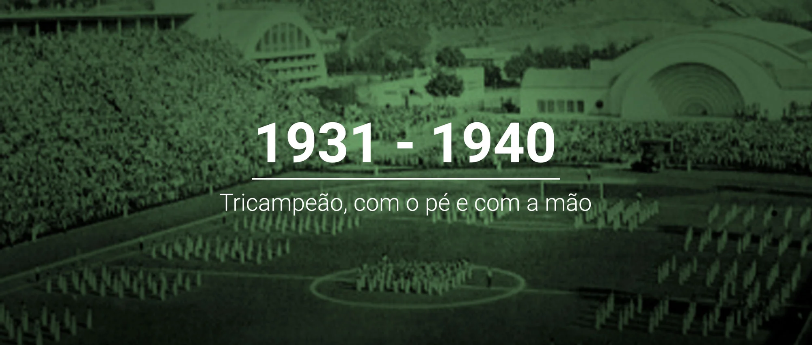
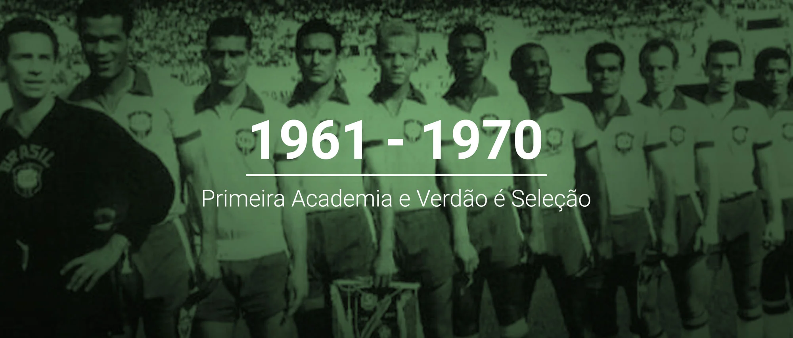

1921 a 1930, Estreia internacional e bicampeão paulista!
Cada vez mais consolidado entre os principais times da cidade, o Palestra Italia disputou sua
primeira partida internacional em outubro de 1922, com vitória por 4 a 1 sobre a Seleção Paraguaia
(então vice-campeã sul-americana), em amistoso realizado na Chácara da Floresta e válido pela
simbólica Taça Guarani. Além disso, o clube comemorou pela primeira vez um bicampeonato paulista, em
1926 (título invicto) e 1927, faturou uma edição extra do Paulistão, em 1926 (de novo invicto), e,
no mesmo ano, conquistou a Copa dos Campeões Estaduais Rio-São Paulo, o primeiro título
interestadual da extensa galeria de conquistas palestrinas.

1931 a 1940, tricampeão, com o pé e com a mão
O Palestra Italia colecionou títulos importantes ao longo da década de 30. Além de comemorar seu
primeiro (e até hoje único) tricampeonato paulista, em 1932, 1933 e 1934, levou os troféus estaduais
de 1936 e 1940, sagrou-se campeão da segunda e última edição do Campeonato Paulista Extra, em 1938
(já havia levado a taça na primeira edição, em 1926), e conquistou o primeiro Torneio Rio-São Paulo
da história, em 1933. Em marcha vitoriosa, o Palestra tornou-se também tricampeão estadual de
basquete nos mesmos anos de 1932 (quando foi disputada a primeira edição do torneio), 1933 e 1934,
fazendo com que a torcida palestrina comemorasse com o grito de “com o pé e com a mão, o Palestra é
campeão”.

1941 a 1950, Arrancada heróica: de palestra a palmeiras
Era março de 1942, durante a Segunda Guerra Mundial, quando o governo Getúlio Vargas instituiu o
decreto que proibia a qualquer entidade o uso de nomes relacionados aos países do Eixo (Alemanha,
Itália e Japão), uma vez que o Brasil entrara no conflito reforçando os Aliados (EUA, Reino Unido,
França e União Soviética) . O Palestra Italia, então, viu-se obrigado a mudar de nome, passando a se
chamar Palestra de São Paulo no dia 13 de março de 1942. A troca de “Italia” por “São Paulo” não foi
suficiente para aplacar a perseguição de alguns adversários e até alguns veículos de comunicação,
que polemizavam as raízes do clube mesmo sabendo-se que a palavra “Palestra” era de origem grega.
Sob ameaça de perder o patrimônio e ser retirado do campeonato que liderava, o Palestra não se deu
por vencido e, em 14 de setembro de 1942, passou a se chamar Sociedade Esportiva Palmeiras, uma
homenagem à extinta Associação Atlética das Palmeiras e uma forma de manter o tradicional P no
escudo da camisa e a ainda mais tradicional cor verde.

1951 a 1960, campeão do mundo e Brasil pintando verde
Em 1951, o mundo foi Palmeiras. Com apoio do então presidente da Fifa, Jules Rimet, o Primeiro
Campeonato Mundial de Clubes (Copa Rio) foi disputado no Brasil com a participação de oito times,
divididos em duas chaves de quatro: Vasco da Gama (Brasil), Áustria Viena (Áustria), Nacional
(Uruguai) e Sporting (Portugal), com sede no Rio de Janeiro; Palmeiras (Brasil), Juventus (Itália),
Estrela Vermelha (Iugoslávia) e Olympique de Nice (França), com sede em São Paulo.
Ao final da fase classificatória, coube a Palmeiras e Juventus decidirem o título em duas partidas.
O Verdão venceu o primeiro jogo no Maracanã por 1 a 0, gol de Rodrigues, no dia 18 de julho. O
segundo jogo, também no Maracanã, no dia 22 de julho, terminou empatado em 2 a 2, gols de Rodrigues
e Liminha. Com esse resultado, o Alviverde tornou-se o primeiro campeão mundial de clubes da
história.

1961 a 1970, primeira academia e verdão é seleção
A década de 60 marcou o Palmeiras como a "Primeira Academia de Futebol", liderada por Ademir da Guia, devido à sua excelência e conquistas. No estadual, o Palmeiras conquistou os Paulistas de 1963 e 66, somados ao de
1959, impedindo uma sequência de 12 títulos do Santos (time de Pelé na época).
Em 1965, sob o comando do técnico Filpo Nuñes, o time venceu o Rio-São Paulo com atuações
brilhantes, incluindo goleadas históricas contra Santos, Botafogo e São Paulo.
O ano de 1965 foi único: o elenco e comissão técnica do Palmeiras foram convocados para
representar a Seleção Brasileira na inauguração do Mineirão, vencendo o Uruguai por 3 a 0. Foi a
primeira e única vez que um clube inteiro representou o Brasil.
O final da década isso se consolidou: o Palmeiras se tornou bicampeão brasileiro em 1967
(vencendo a Taça Brasil e o recém-criado Torneio Roberto Gomes Pedrosa) e tetracampeão em 1969 (com
mais um Robertão). Internacionalmente, faturou o Torneio Ramón de Carranza, na Espanha, em 1969,
batendo o Real Madrid na decisão.